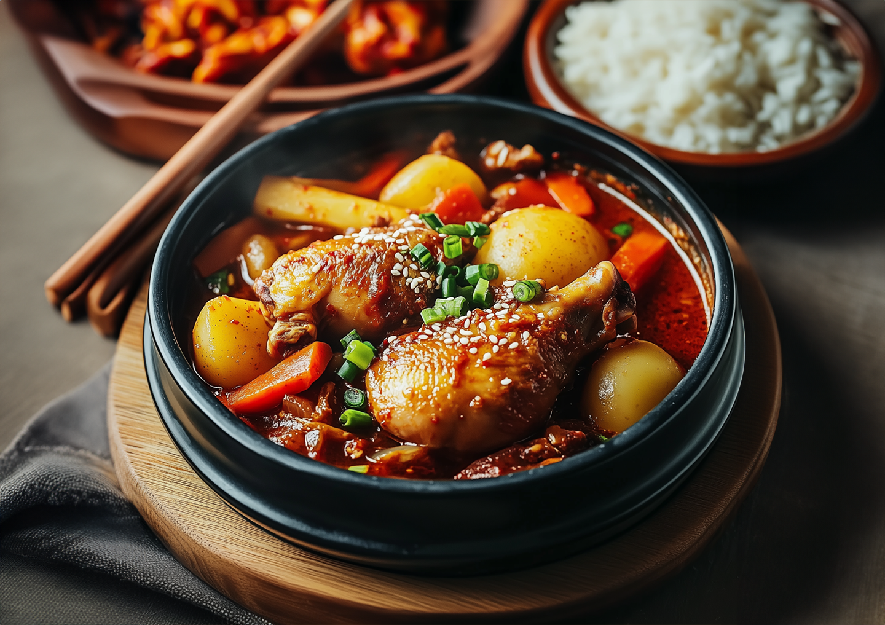
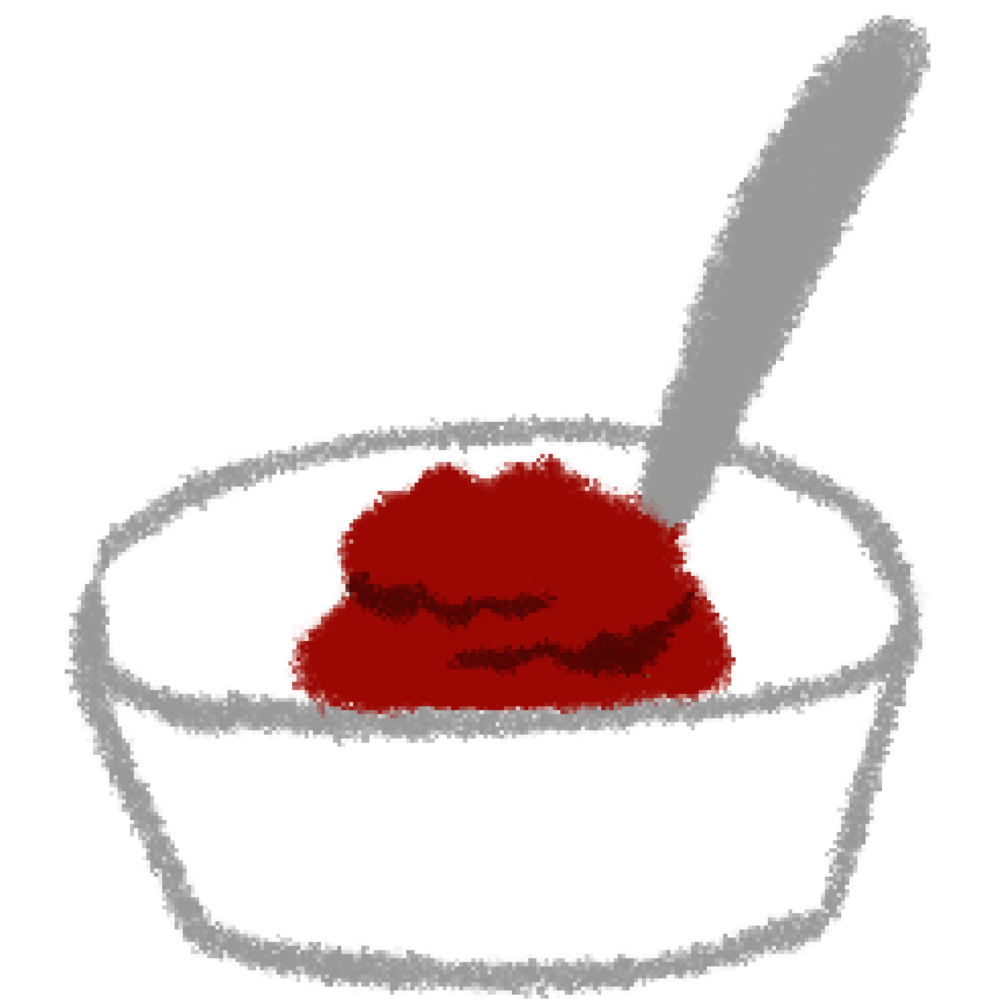
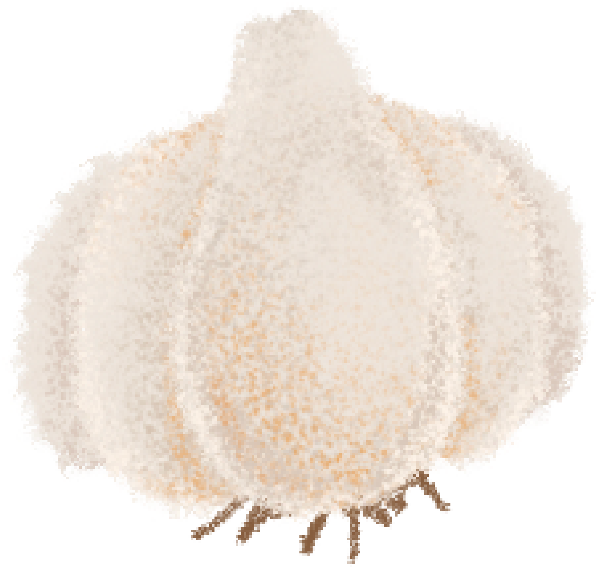
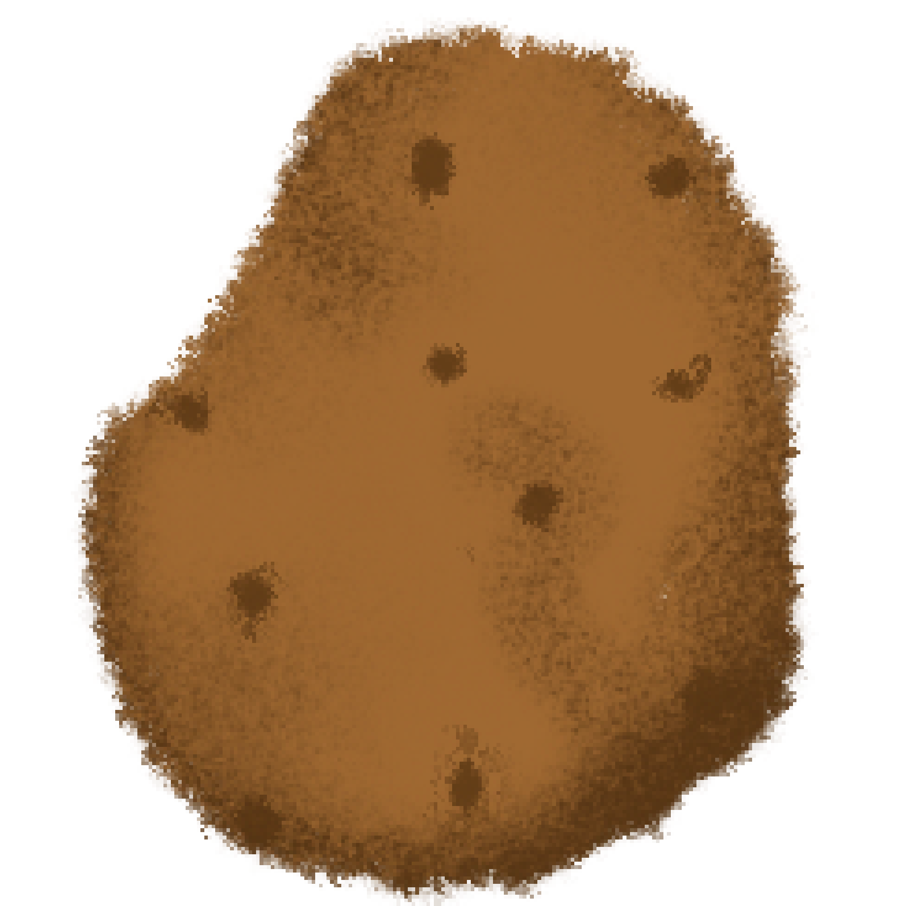
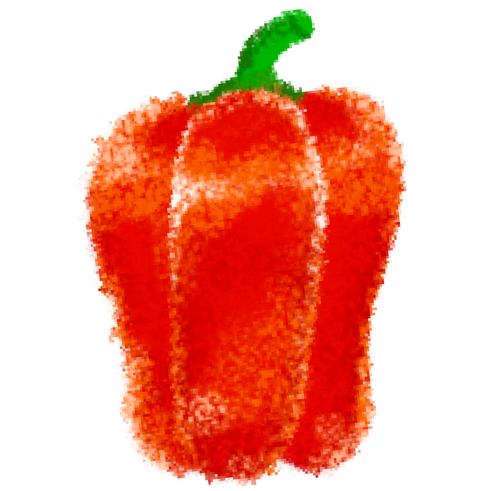
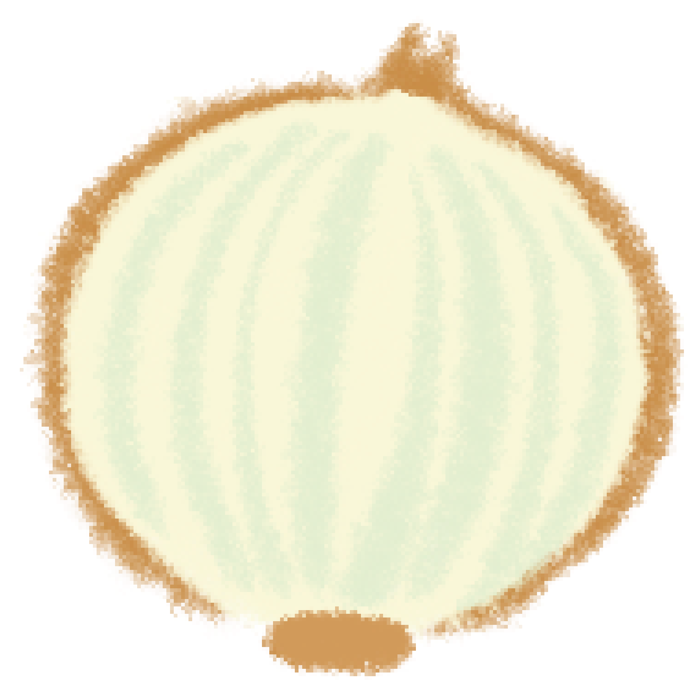

닭도리탕
닭 한마리

물

고추장
가는 고춧가루

진간장

설탕

다진 마늘

감자
당근

파프리카
대파

양파
맛술
1. 닭을 잘 손질하고 익힌다.
닭도리탕용 닭을 한 마리 준비한다. 닭에 군데군데 붙어있는 지방을 덜어내고 깨끗하게 씻어 준비한다.
냄비에 물을 붓고 손질된 닭을 넣고 한소끔 끓인다. 물이 끓어 오르고
닭이 살짝 익었을 때 건저네어 물을 버리고 닭의 불순물을 제거한다.
2. 재료들을 한데 모아 맛있어지도록 끓인다.
데친 닭을 궁중펜에 넣고 잡내를 없애기 위해 맛술 한 컵 (소주로 대체 가능)과
물 1 리터를 붓는다. 이때 고추장 2 큰술, 가는 고춧가루 5 큰술,
국간장 3큰술, 마늘 1큰술, 설탕 1큰술을 넣고 먹기 좋게 썰은 감자와 당근을
함께 넣어 끓인다. 국물이 적당히 졸여지면 파프리카, 대파, 양파를 넣어 섞어준다.
중간 중간 맛을 보면서 취향에 맛도록 소금이나 진간장으로 간을 맞춘다.
꽃게의 진한 맛과 된장의 깊은 맛이 어루러진 환상의 맛.